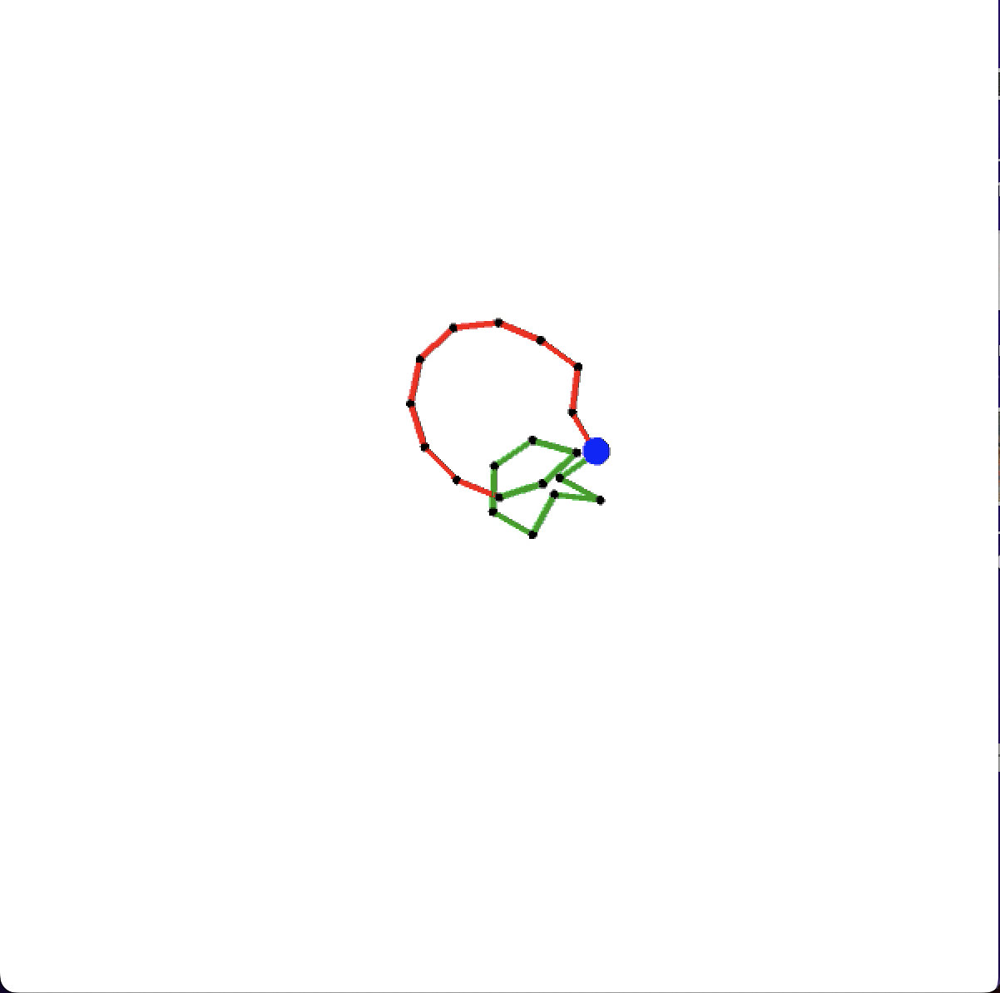
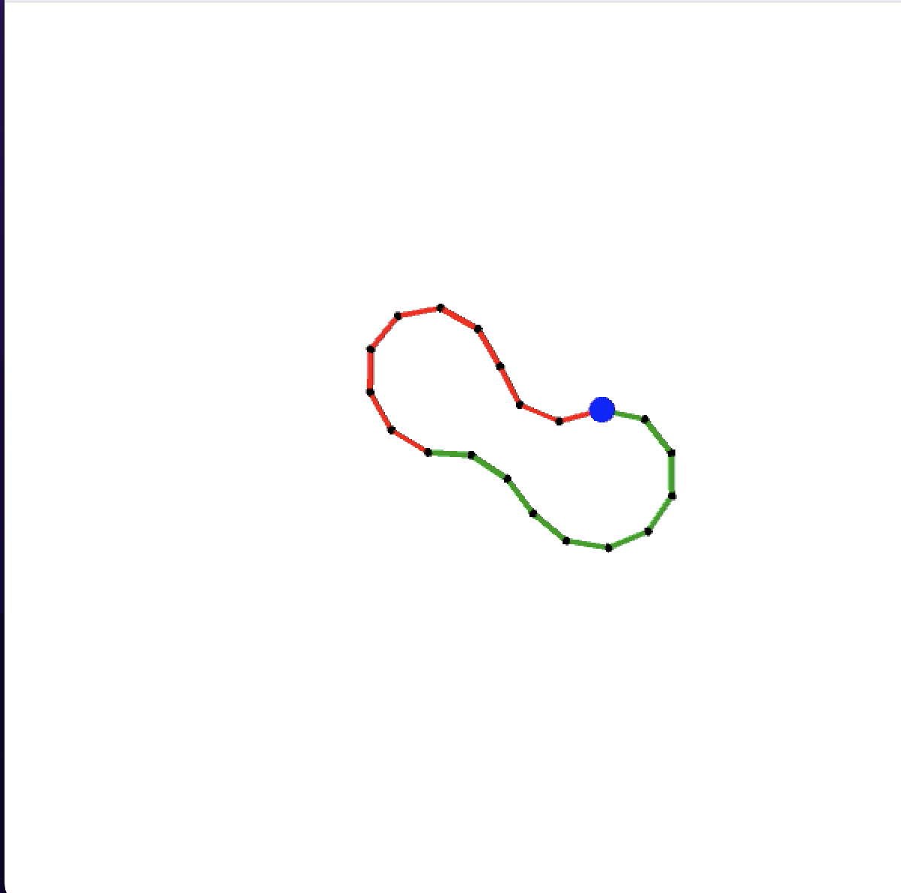
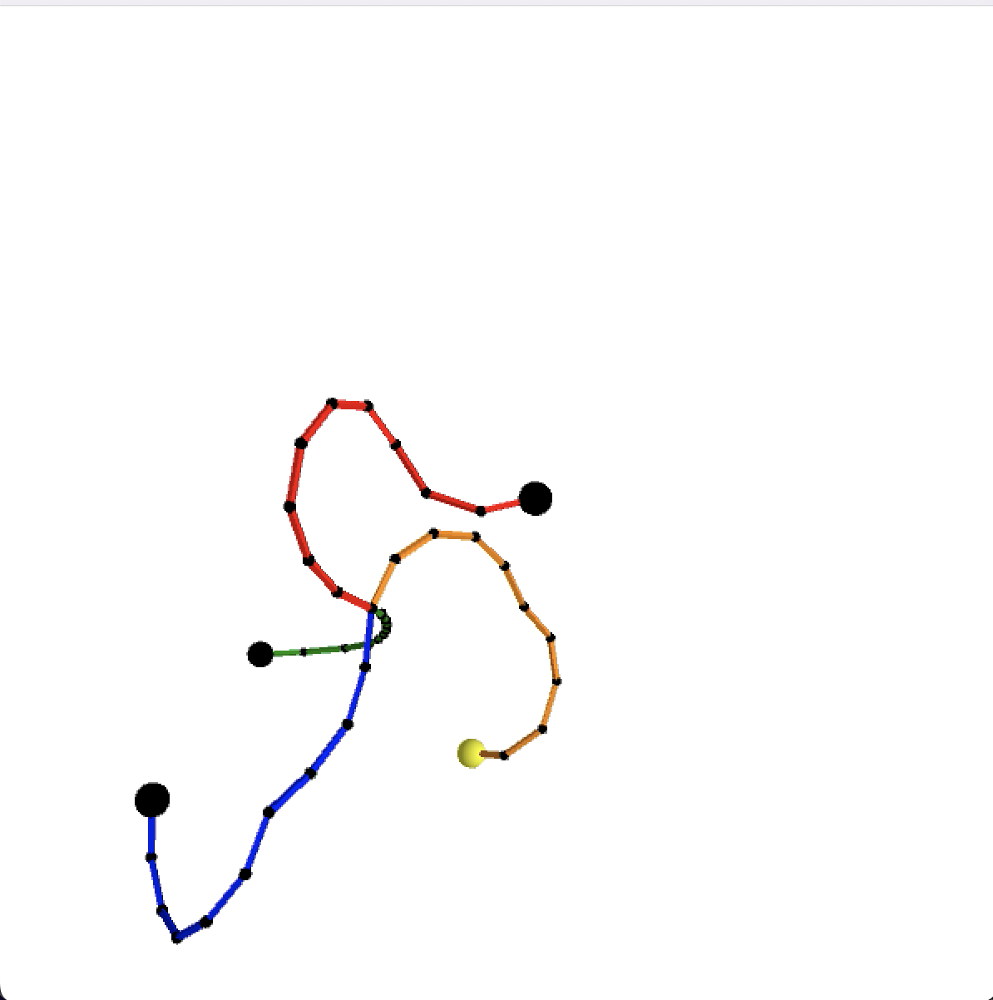

CCD inverse kinematics with no limit on joint angles

CCD inverse kinematics with a 40 degree limit on joint angles

3D showcase of CCD inverse kinematics with joint limits
List of features attempted and description
Multi-Arm IK (40 points)
Video 1 and Video 2 both showcase the animation of 2 arms, each with 10 joints moving from their initial positions to a goal
After both arms have reached their goal, the goal moves so that first, only the arm on the right can reach the goal, and then so that neither arms can reach the goal.
Video 1 shows the robot arms animating towards the goal without enforcing joint limits. It can be seen that the right arms folds in on itself in a way that would not be possible in a real robot.
Video 2 performs the same animation as video 1, but the joint angle of 40 degrees is enforced
Video 3 showcases joint limits in a 3D senario, along with user interaction
3D Simulation and Rendering (20 Points)
I used the CAMERA class created by Liam Tyler
Additional overhead was required to rotate the joints in the correct plane and set joint limits
User Interaction (10 points)
Video 3 showcases user interaction by allowing the user to select which of the four arm's goal positions they would like to manipulate in any of the 6 directions:
I used the camera class created by Liam Tyler to move the camera around the 3D environment, as well as Processing to display the behavior of my simulations.
Difficulties
I didn't really ever attempt to implement inverse kinematics in 2D because I wanted my framework to be built with the intention of having a 3D inverse kinematics implementation.
Implementing inverse kinematics in 3D was actually not too bad. I was able to use rotation matrices to rotate my joints to where I wanted them to point, and implementing CCD was
not too bad. My difficulty came from introducing joint limits. In 2D, this idea is pretty easy, because all of the vectors are on the Z=0 plane, but in 3D the rotation of a joint
could be a rotation about any arbitrary axis. Luckily, with CCD, I know the axis I want to rotate around, it is the axis that is the cross product of the vector that is created from
going from the current root of the joint to the end of the arm, and the vector that is created from going from the root of the current joint to the goal position. This cross product
gave me the normal of the plane I wanted. I would then find the direction that is the limit I set my joint angle to be, that is in the direction of the goal, and in the same plane as
my previous joint direction and the direction to the goal. An image visualizing this problem is shown below.
Visual representation of joint limit problem
Videos
VIDEO 1: Animation of robot arms using Inverse Kinematics without a limit on joint angles
VIDEO 2: Animation of robot arms using Inverse Kimematics with a limit on joint angles
VIDEO 3: User interaciton controlls the goal positions of the four robot arms. Showcase of the 3D nature of my Inverse Kimematics implementation